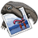
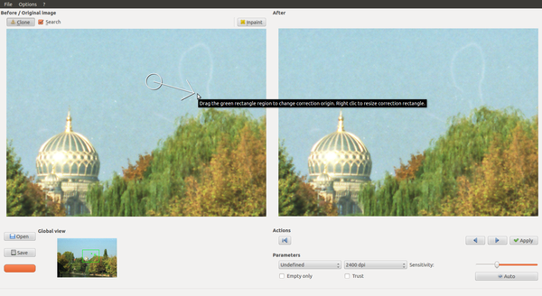
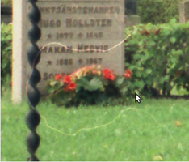
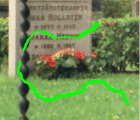
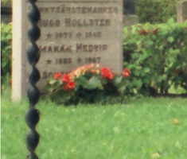

Tamanoir
Dieser Artikel wurde für die folgenden Ubuntu-Versionen getestet:
Ubuntu 14.04 Trusty Tahr
Zum Verständnis dieses Artikels sind folgende Seiten hilfreich:

Tamanoir  ist ein in Qt verfasstes Spezialprogramm, das sich ausschließlich dem Problem widmet, Staub- und Kratzerartefakte aus bereits eingescannten Bilddateien zu entfernen – also eine Art digitaler Staubsauger. Es wurde für Farbdias entwickelt, liefert aber auch für Farb- und Schwarz-Weiß-Negative gute Ergebnisse. Programmname und -symbol beziehen sich auf den großen Ameisenbär, auf französisch "Tamanoir". Ähnlich diesem, der seine Nahrung mittels einer Klebezunge fängt, entfernt das Programm Staub und Kratzer aus den Vorlagen ...
ist ein in Qt verfasstes Spezialprogramm, das sich ausschließlich dem Problem widmet, Staub- und Kratzerartefakte aus bereits eingescannten Bilddateien zu entfernen – also eine Art digitaler Staubsauger. Es wurde für Farbdias entwickelt, liefert aber auch für Farb- und Schwarz-Weiß-Negative gute Ergebnisse. Programmname und -symbol beziehen sich auf den großen Ameisenbär, auf französisch "Tamanoir". Ähnlich diesem, der seine Nahrung mittels einer Klebezunge fängt, entfernt das Programm Staub und Kratzer aus den Vorlagen ...
Tamanoir befindet sich laut Projektseite noch in der Beta-Phase. Leider stagniert die Entwicklung, seit 2010 sind kaum Veränderungen zu verzeichnen. Die Programmsprache ist Englisch, eine deutsche Lokalisierung ist nicht vorhanden.
Installation¶
Das Programm ist nicht in den offiziellen Paketquellen enthalten. Zur Installation muss man daher auf ein "Personal Package Archiv" (PPA) oder Fremdpakete ausweichen, wenn man das Programm nicht selbst aus dem Quellcode kompilieren möchte.
PPA¶
Dariusz Duma stellt sein "Personal Package Archiv" (PPA) [1] als Paketquelle zur Verfügung. In diesem PPA sind zahlreiche andere Programme wie RawTherapee oder Luminance HDR enthalten, die sich mit dem Thema (RAW-)Fotografie und Bildbearbeitung unter Linux beschäftigen. Um Problemen mit den offiziellen Paketquellen vorzubeugen, wird empfohlen, das PPA nach der Installation wieder zu deaktivieren oder Apt-Pinning zu nutzen.
Adresszeile zum Hinzufügen des PPAs:
ppa:dhor/myway
Hinweis!
Zusätzliche Fremdquellen können das System gefährden.
Ein PPA unterstützt nicht zwangsläufig alle Ubuntu-Versionen. Weitere Informationen sind der  PPA-Beschreibung des Eigentümers/Teams dhor zu entnehmen.
PPA-Beschreibung des Eigentümers/Teams dhor zu entnehmen.
Damit Pakete aus dem PPA genutzt werden können, müssen die Paketquellen neu eingelesen werden.
Nach dem Aktualisieren der Paketquellen kann folgendes Paket installiert werden [2]:
tamanoir (ppa)
 mit apturl
mit apturl
Paketliste zum Kopieren:
sudo apt-get install tamanoir
sudo aptitude install tamanoir
Fremdpakete¶
Wer davor zurück scheut, wegen eines einzelnes Pakets gleich ein komplettes PPA einzubinden (und anschließend wieder zu entfernen), kann sich auch ein einzelnes Fremdpaket  herunterladen und manuell [3] installieren. Der Paketname lautet:
herunterladen und manuell [3] installieren. Der Paketname lautet:
tamanoir_VERSION-Xdhor~UBUNTUVERSION_ARCHITEKTUR.deb
Nachteilig ist, dass man sich um Programmaktualisierungen in Zukunft selbst kümmern muss.
Hinweis!
Fremdpakete können das System gefährden.
Bedienung¶
Tamanoir unterstützt die Formate .png, .pnm, .xpm, jp(e)g, .tif(f), .bmp und .cr2. Für alle bearbeiteten Bilder wird eine Backup-Version erstellt, die den Originalzustand erhält (Datei-Originalname mit angehängtem -orig im Originalformat).

Nach dem Start [3] öffnet sich eine Oberfläche, in der links nach Laden eines Bildes ein Ausschnitt des Originals ("Before/Original", in 1:1-Größe), rechts ("After") die vorgenommenen Veränderungen in Echtzeit angezeigt werden. Geladen werden die Bilder über "File -> Open" (oder die "Open"-Schaltfläche). Unter den Fenstern erscheint eine kleine Ansicht des gesamten Bildes, in der der aktuell gezeigten Ausschnitte in einem grünen Kasten angezeigt wird, und durch Ziehen mit der Maus auch navigiert werden kann. In dem Fenster werden auch die Vorschläge, die gemachten Änderungen und Markierungen verschiedenfarbig angezeigt.
Außerdem kann unter "Parameters" festgelegt werden, ob man dunkle Kratzer etc. bearbeiten will (die eher beim Einscannen von Positiven/Dias entstehen, Auswahl "Positive"), oder helle (die durch Staub auf Negativen auftreten, entsprechend "Negative"); mit "Undecided" kann man alle Fehler bearbeiten lassen.
Tamanoir versucht, eine angemessene Bildauflösung einzustellen, die aber noch korrigiert werden kann (Auswahlfenster "Scan-Resolution"). Mit dem Schieberegler "Sensitivity" wird festgelegt, wie hoch der Kontrast zwischen Verunreinigung und Hintergrundfarbe sein muss, um erkannt zu werden (Voranzeige direkt im Gesamt-Ansichtsfenster). Mit der Checkbox "Empty" lässt sich festlegen, dass nur in verhältnismäßig großen einheitlichen Flächen (Himmel o.ä.) nach Verunreinigungen gesucht werden soll, die Checkbox "Trust" ermöglicht es, von Tamanoir als "eindeutige Fehler" erkannte kleine Verunreinigungen direkt zu akzeptieren, ohne sie zu überprüfen.
Auch eine vollautomatische Korrektur ist vorgesehen (Schaltfläche "Auto", die kann im Reiter "Options -> Preferences > Processing -> hide Auto button" aber auch ausgeblendet werden). Wer möchte, kann auch eine "Maske" der erfolgten Korrekturen ausgeben lassen, dazu dort bei "Dust layer mask" die Checkbox zu "propose the exportation of dust mask" aktivieren, sie wird auf Wunsch als Extradatei abgelegt (Namenserweiterung -orig-mask).
Eine Anleitung in Englisch lässt sich über "? -> Tutorial" erreichen; zu allen Funktionen des Programms erscheinen Tooltips, wenn man die Maus über ihnen stehen lässt. Eine Vollbildansicht kann über Strg + F ein- und ausgeschaltet werden (oder "Options -> Full Screen", der Reiter ist aber in der Vollbildversion zum Zurückstellen nicht erreichbar).
Halbautomatische Erkennung¶
Die Erkennung startet in der oberen linken Ecke des Bildes. Im "Before/Original"-Fenster erscheint ein Kreis oder eine Ellipse über dem Klon-Ursprung, mit einem Pfeil, der auf die fehlerhafte Stelle weist. Mit "Apply" oder Taste A wird die Änderung angenommen, mit M kann man diese Stelle markieren, um sie ggf. später händisch zu bearbeiten. Man kann sie auch unbearbeitet lassen, wenn es kein "echter Fehler" ist.
Mit der
→ -Taste (oder Schaltfläche) springt man dann zum nächsten Änderungsvorschlag. Zum vorherigen Vorschlag kommt man mit der
← -Taste/Schaltfläche. Die Vorschläge können auch angepasst werden, indem man im "Original"-Fenster die Größe des Klon-Ursprunges verändert ( -Mausrad drehen), oder das Ziel korrigiert. Mit der "Rewind"-Schaltfläche unter "Actions" kann man die Prozedur erneut aufrufen, es wird wieder in der oberen rechte Ecke des Bildes begonnen. Auf diese Art lassen sich ein Großteil der Fehler ausmerzen, allerdings bleiben ggf. Fehler, z.B. in Bereichen mit kleinen Flächen, Mustern o.ä., zurück.
-Mausrad drehen), oder das Ziel korrigiert. Mit der "Rewind"-Schaltfläche unter "Actions" kann man die Prozedur erneut aufrufen, es wird wieder in der oberen rechte Ecke des Bildes begonnen. Auf diese Art lassen sich ein Großteil der Fehler ausmerzen, allerdings bleiben ggf. Fehler, z.B. in Bereichen mit kleinen Flächen, Mustern o.ä., zurück.
Manuelle Korrekturen¶
Um diese verbliebenen Fehler zu korrigieren, kann mit der
Pos1 -Taste ein zweiter Durchlauf gestartet werden. Dazu dann die "Clone"-Schaltfläche aktivieren (oder
C ); Checkbox "Search" (oder
S ) veranlasst das Programm, selbst nach passenden Bereichen zu suchen. Im Original erscheint wieder das Auswahlwerkzeug, mit der  -Maustaste legt man den Klon-Ursprung fest. Mit Drehen des -Mausrades kann die Größe der Auswahl angepasst werden, dann zieht man ohne Tastendruck die Pfeilspitze zu der Position, die korrigiert werden soll, mit der
-Maustaste legt man den Klon-Ursprung fest. Mit Drehen des -Mausrades kann die Größe der Auswahl angepasst werden, dann zieht man ohne Tastendruck die Pfeilspitze zu der Position, die korrigiert werden soll, mit der  -Maustaste erfolgt das Klonen. Den nächsten Abschnitt kann man per
Bild ↓ Taste erreichen. Durch die Echtzeit-Anzeige links kann man sehr gut erkennen, wie passend der Klon-Ursprung gewählt ist.
-Maustaste erfolgt das Klonen. Den nächsten Abschnitt kann man per
Bild ↓ Taste erreichen. Durch die Echtzeit-Anzeige links kann man sehr gut erkennen, wie passend der Klon-Ursprung gewählt ist.
Wenn man die -Maustaste gedrückt hält, kann man mit dem Ziehen auch parallel den Klon-Ursprungsort verändern, was gerade für Farbverläufe oder in regelmäßig strukturierten Bereichen zur Korrektur sehr hilfreich ist. Die Lage der Änderungen kann man sich anzeigen lassen, indem man den Mauszeiger über dem Ergebnis-Fenster stehen lässt, dort werden sie dann in Rot hervorgehoben.
|  |
| Original |
|  |
| mit "Inpaint" bearbeitet |
|  |
| Resultat |
Mit der "Inpaint"-Schaltfläche lässt sich der Mauszeiger im Original-Fenster in einen kleinen Kreis verwandeln, mit dem sich "malen" lässt, um diese Stellen zu korrigieren. Dabei wird die schadhafte Stelle mit den passendsten Inhalten aus der Umgebung gefüllt, sehr hilfreich, z.B. um in Mustern und Strukturen korrigieren zu können. Hierbei ist eine möglichst kleine Einstellung der "Malspitze" vorteilhaft (Drehen des -Mausrades), um möglichst nur die beschädigten Stellen abzudecken und so die besten Korrekturergebnisse zu erzielen. Ein Beispiel in der Bilderstrecke, das Ergebnis ist in "strukturierter" Umgebung (Gras) am besten.
Über die "Save"-Schaltfläche oder "File -> Save" wird das Ergebnis unter dem Originalnamen im Ursprungsformat gespeichert. Das Original bleibt mit dem Namens-Zusatz -orig erhalten.
Problembehebung¶
Wenn man nicht mit der halbautomatische Bearbeitung beginnt, kann es passieren, dass die Anzeige der Klon-Ursprünge und der Fehler im Original-Fenster nicht erscheint. Dann muss das Programm ggf. neu gestartet werden.
Etwas irritierend ist, dass in den Tooltips für die Bearbeitung ein "grünes Rechteck" angegeben wird, tatsächlich aber eine weißer Kreis/Ellipse den Klon-Ursprung anzeigt. Leider werden im Öffnen-Dialog keine Vorschaubilder angezeigt, sodass man wissen muss, was man öffnet, oder sich in eine Dateibrowser oder Bildbetrachter parallel die Bilder anzeigen lässt.
Rückgängig-Funktion¶
Leider bietet Tamanoir nicht die Möglichkeit, einmal gemachte Änderungen zurückzunehmen (es ist keine "Undo"-Funktion vorgesehen). Wenn man die "Verschlimmbesserung" manuell nicht wieder in den Griff bekommt, muss man ggf. nochmals beginnen (zum Glück erhält das Programm die Original-Vorlage unverändert).
Alternativen¶
Einige Scanner bieten gleich beim Erstellen von Scans die Möglichkeit, Staub und Kratzer zu entfernen (Digital ICE, "Digital Image Correction and Enhancement"); leider meist aber nicht unter Linux. Zudem erzeugen sie ggf. seltsame Artefakte. Derartige Korrekturen sind anderweitig händisch sehr zeitaufwändig, sie lassen sich aber z.B. mit GIMP oder anderen Bildbearbeitungsprogramme und viel Geduld bewerkstelligen.
 Programmübersicht
Programmübersicht- Erstellt mit Inyoka
-
 2004 – 2017 ubuntuusers.de • Einige Rechte vorbehalten
2004 – 2017 ubuntuusers.de • Einige Rechte vorbehalten
Lizenz • Kontakt • Datenschutz • Impressum • Serverstatus -
Serverhousing gespendet von